李國志｜老闆
大家都叫他老闆，白妹則叫他阿志。他穿著深色長袍，戴一頂黑色官帽，帽下是短髮與灰白的鬢角；看人時常留著一點溫和的笑。黃泉燒肉店由他照看，來客再奇怪，他也願意先問想吃什麼。他另有業鏡羅漢的身份，不過在店裡，最常做的仍是招呼、聽人說話，或替不知道該怎麼辦的人找一個可以開始的辦法。
開卷之前
黃泉燒肉店的門一開，來的未必都是想吃燒肉的人。有人拿著執念，有人只是需要坐一會兒；替他們端菜、結帳的人，也都有自己的牽掛。以下介紹以人物登場時的情況為主，後來的選擇與身世，留在故事裡慢慢認識。
大家都叫他老闆，白妹則叫他阿志。他穿著深色長袍，戴一頂黑色官帽，帽下是短髮與灰白的鬢角；看人時常留著一點溫和的笑。黃泉燒肉店由他照看，來客再奇怪，他也願意先問想吃什麼。他另有業鏡羅漢的身份，不過在店裡，最常做的仍是招呼、聽人說話，或替不知道該怎麼辦的人找一個可以開始的辦法。

黑色長直髮、齊瀏海，穿店裡的深色制服。她知道菜怎麼出、哪張桌還沒收，也知道客人來到黃泉，未必能立刻接受自己的處境。說話有時乾脆，有時會開一個小玩笑，真正碰上旁人的痛，卻不會只圖快把人勸好。店裡的日常從她的手上經過；那些她努力照顧的生命，也會一點一點讓人看見她自己曾經留下的想念。

他有一頭黑金相間的短髮，黑色髮根與髮束間的金色挑染很醒目，額前的頭髮向上抓起。消防員的經歷使他習慣先看別人需不需要幫忙，至於自己的累，常等到事情結束才肯承認。嘴上能鬧，做事卻認真；在小雨與咪咪面前，也有很難藏住的柔軟。他後來留在照相館，替人留下照片，同時努力守住終於有了的家。

白貓，頸上掛著九一七號牌。認得的人與氣味，她記得很牢，只是不一定用人能聽懂的方式表達。化為人形時，是穿水手服的女孩，黑色長髮帶著側分長瀏海。她叫小雨媽媽，叫大寶爸爸；有時撒嬌，有時很懂事，還有些說得很小、卻希望家人認真聽見的要求。

黑貓，號牌是二九五。與三途川的貓站長一起出現在往返的路上。人會為名字、去處與重逢想很多，貓也有自己肯靠近或不肯離開的理由。認牠時，別與後來車站裡另一隻沒有交代名字的黑貓混在一起。

黑白相間的狗，同樣掛著九一七號牌。牠習慣陪在旁邊，會迎人，也會在有人難過時安安靜靜留下。牠不需要先想好一句安慰，身子挨近、沒有掙開，便能讓被陪的人知道自己還不是獨自一個。

看起來年輕，棕色中短髮從中間或略偏中間分開，額前留著鬆鬆的髮束。愛甜食，會偷懶，也很擅長用一句欠揍的話把嚴肅的場面鬧歪。真正談到姻緣，他卻不是只會替人說好聽話的神。紅線、識命靈瞳與文印都有各自的用途；他有漫長的過去，也有一道即使知道規則，仍很難跨過的距離。

圓框黑眼鏡，右臉頰有紅色胎記；頭髮是帶黑色髮根的薄荷綠，額前齊碎瀏海，兩側較短，後頸留著向外翹的層次。狐姬後來替她做「赤戀星空」造型，改成深色短髮與齊瀏海，換隱形眼鏡，用亮片點綴胎記；插圖依各場景的造型呈現。她喜歡畫，也喜歡唱歌，最初卻不太敢把自己的喜歡放到別人面前。到了燒肉店，她學著做事，後來跟月老學習姻緣之術。她有時嘴快、有時會怕牽錯，對在乎的人卻肯花時間，也肯站出來。
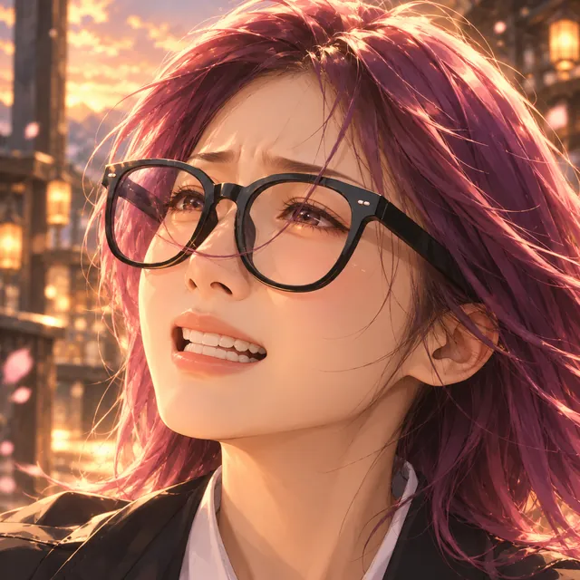
紫紅色直髮，長度約到肩，側分瀏海，戴大大的黑色方框眼鏡。她與阿志之間有許多年沒能好好說完的話。喜歡戲劇，也會明白地生氣；不是送一件衣服、說一聲很快回來，就能把那些等過的日子全抵掉。她要的關心很具體：出去的人記得回來，留下的人也能被認真聽見。
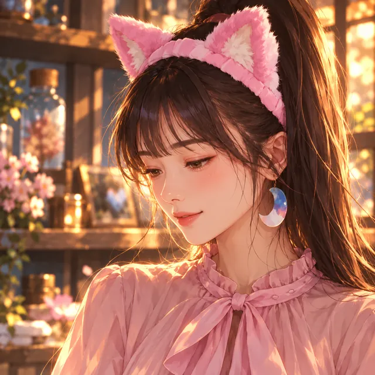
在三途川做導遊的妖狐。她懂禮貌、懂分寸，也懂得把報酬與工作條件說清楚。溫柔不代表什麼都願意，客人若越過界線，她同樣會拒絕。粉紅色信封裡留著她掛唸的名字；存功德、少買一點香，也是為了讓某個真正等到的日子，多幾個能一起去的地方。
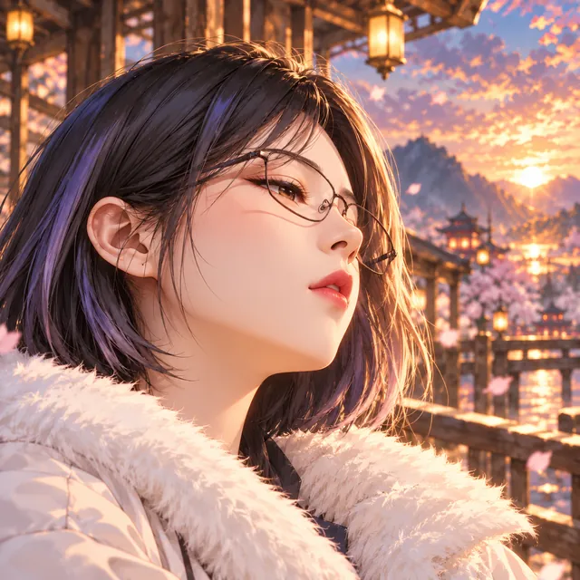
狐姬的姐姐。說話快，脾氣也快，聽見妹妹被纏，往往比勸她的人先動手。姐妹之間能互罵，遇到外人卻很清楚自己要站哪裡。她有不肯讓步的地方，也有不知該如何面對的害怕；關心妹妹時，並不總能用好聽的話說出來。
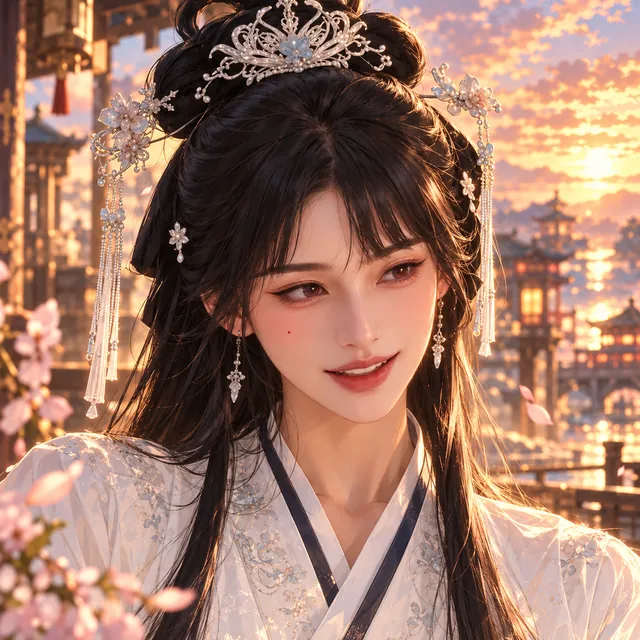
甜食屋裡的白衣女子，擅長將一份甜送到靈魂最需要的時候。孟婆湯、遺願馬卡龍，以及讓人得以休息的甜點，都與她的發明有關。她能笑著招呼人，記住客人愛吃的口味；只是別人記住的她，與她自己能想起的過去，有時並不相同。
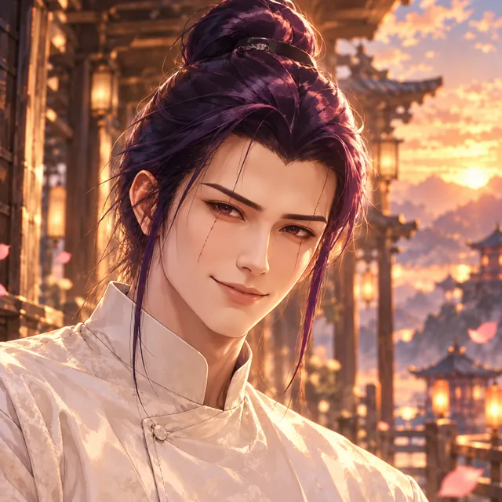
戲之魂偶，身上有機械構造與能感受情緒的靈魂核心。他曾站上舞臺，也在甜食屋替人挑選合適的甜點。語氣常平，內心卻不是空的；一隻盤子轉了多久，一段臺詞記到如今，都可能藏著不容易說完的往事。二號與辜老師，是認識他時不能輕輕跳過的名字。
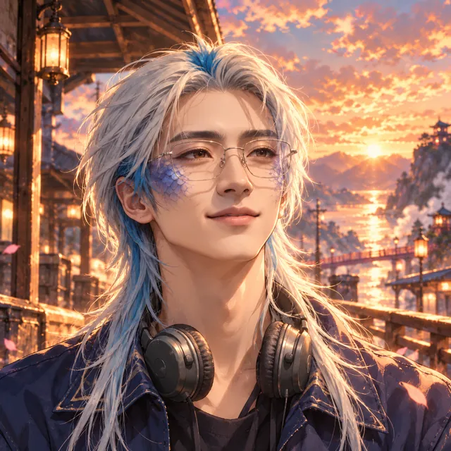
第二王國的嫉妒魔王。力量強，學人間禮節與戀愛時，卻常把漫畫裡的話當成真能照做的辦法。他來三途川，是想替養女找一條不同於戰鬥的路；在教孩子以前，自己也有很多事得重新學，包括怎樣接受拒絕，以及怎樣讓期待不變成另一種逼迫。
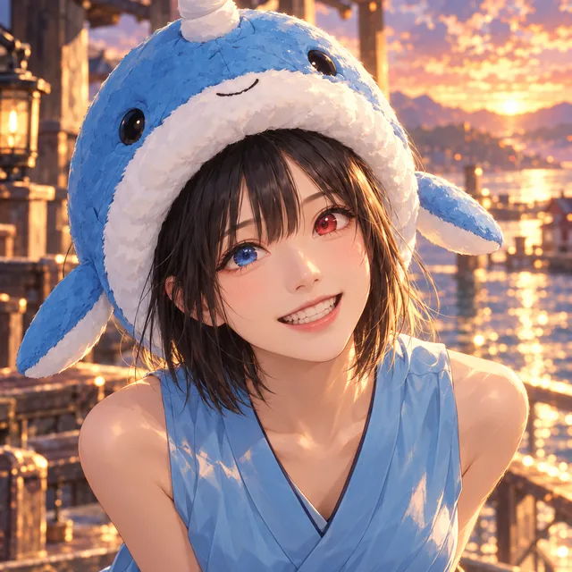
戴著藍色獨角鯨帽，白色絨邊下是黑色短直髮與細碎瀏海，兩眼一藍一紅。她是利維坦的養女，不喜歡戰鬥，被帶來跟語彤學畫。很多想念，她習慣先當成玩笑說；等有人願意不笑、不催，那些畫裡的海與曾經的族人，才慢慢有機會被看見。
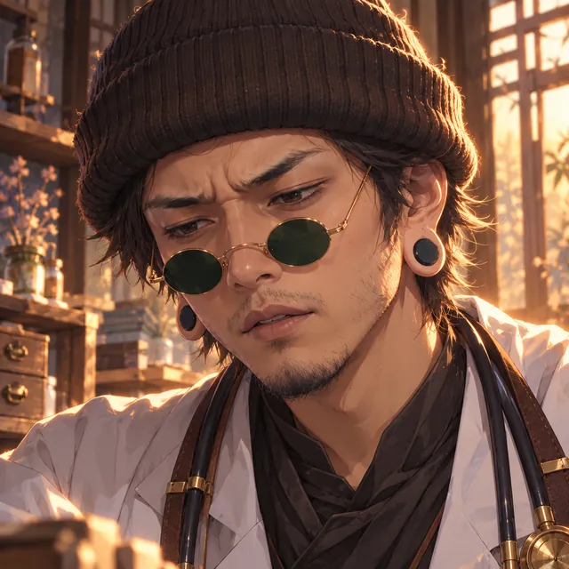
醫神，也是忘憂舞的發明者。平日能開玩笑，對吃進鍋裡的東西還很挑；一旦察覺靈魂出了問題，語氣便會沉下來。他肯盡力，也肯說自己沒治好。保護、抑制與治癒不是同一件事，他不會只為讓人安心，就將尚未找到的解法說成已經在手裡。
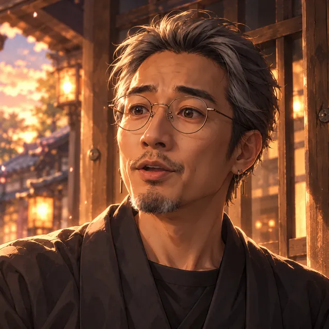
來到黃泉時，有一段仍想好好完成的感情。月老與狐姬都曾陪他走過一部分。往後故事裡另有庚寅地球的杜老大：外貌、身份與身邊的日子都有變化，認識兩者的關聯時，仍得留意那是另一個時空。
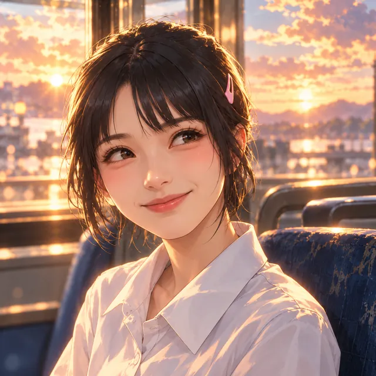
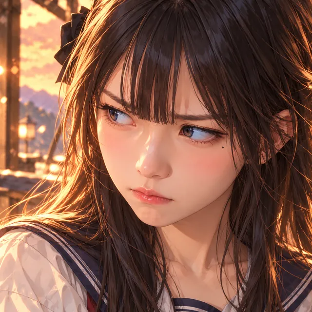
安恆把成績與家計看得很重，常因為怕拖累母親而將需要幫忙的話藏起來。怡曼認識他的缺點，也記得兩人相處裡那些他自己不覺得值得被喜歡的小事。鐵蛋是靈媒，鐵頭的妹妹，遇到神明能鬥嘴，遇到不被旁人相信的經驗，也有自己的辛苦。他們的故事發生在庚寅地球，與三途川的角色相似處再多，也不能直接當成同一個人。